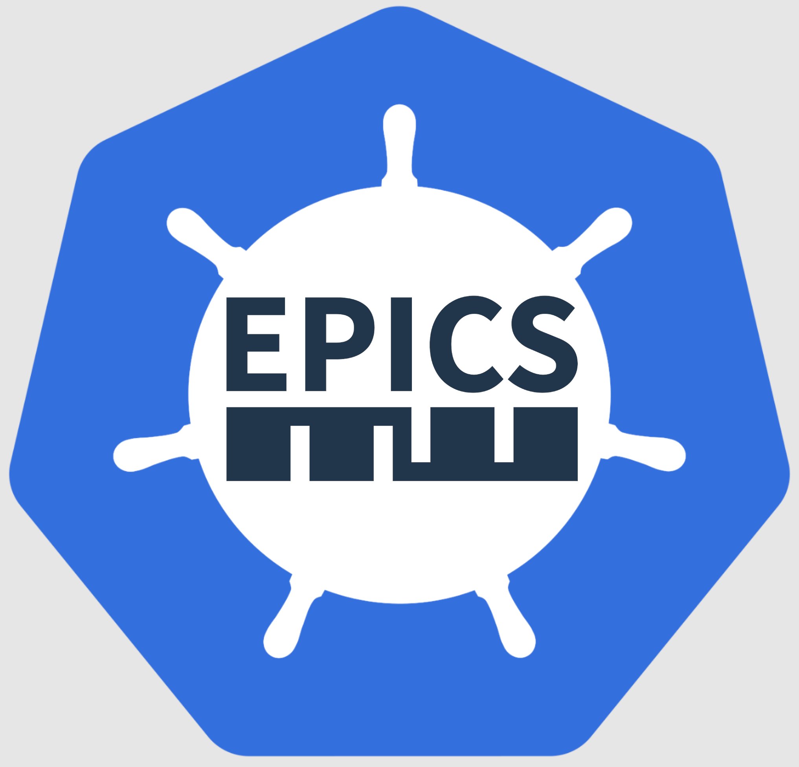

epics_containers 
main
Tutorials
Setup a Kubernetes Server
Useful Kubernetes Additions
Create a beamline repository
Deploy The Example IOC
Manage IOCs
Explanations
Essential Concepts
epics-containers Contents
Channel Access and Other Protocols
Kubernetes Cluster Config
How-to Guides
Add an IOC instance to a beamline
Create a new generic IOC image
Run an IOC without Kubernetes
Debug an IOC instance locally
Debug an IOC instance in Kubernetes
Reference
Frequently Asked Questions
Command Line Interface for IOC Management
Contributing
Versions
epics_containers
»
Run an IOC without Kubernetes
View page source
Run an IOC without Kubernetes
TODO